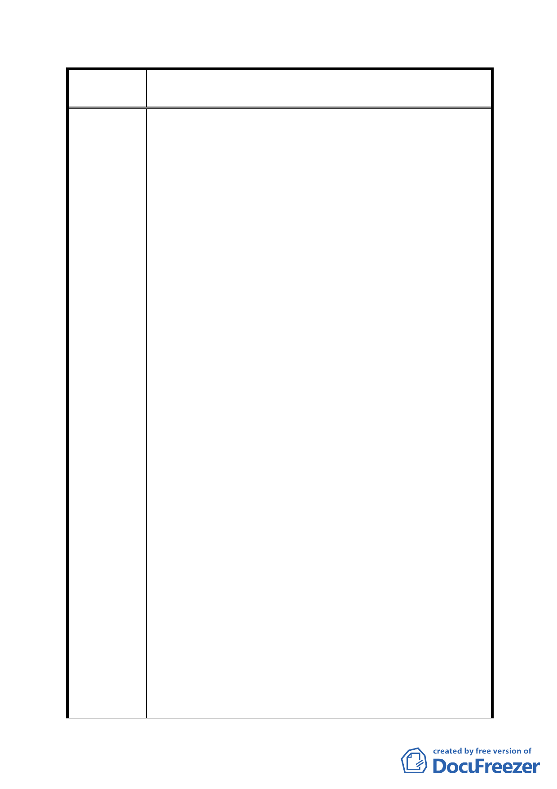

案
名
修訂臺北市「基隆河（中山橋至成美橋段）附近地區土地使
用分區與都市設計管制要點」（北段地區）計畫案
計畫、都市設計之大街廓開發基本立意與預期之都市
態樣風貌。
三、修訂計畫內容對照表編號十一：
建議理由：
1、內湖科學園區及大彎南段緊鄰本區，且其地價遠低於
本區，台北市政府十餘年來大幅開放上揭地區之商業
使用致嚴重壓縮本區商業使用需求，是本區商業用地
由高強度之商業使用轉作低強度之住宅使用實為不得
不然。
2、地主於區段徵收領回土地時即因商業用地同時擁有高
強度使用及容積獎勵雙重誘因，始願以遠低於住宅用
土地之分配比例領回商用土地（86年大灣北段土地區
段徵收分配比例一覽表詳附圖）；高強度商業用途已
因前述不符市場需求，如再強加該修訂內容所載獎勵
限制，對地主豈非雙重懲罰？
3、一般地區商業用地如做低強度之住宅使用仍得適用綜
合設計放寬獎勵，且無本修訂案商業用途1/2以上之限
制。
4、修訂案已有「至少一、二樓需作為原計畫商業使用」、
「開發作住宅使用時，須於建築基地內提供具有公
園、綠地或廣場性質之公共設施」等規範，顯見修訂
內容已維持商業區及娛樂區主要軸帶商業活動內涵，
並要求適度提供因住宅使用衍生之必要公共設施，已
兼顧都市發展、市場開發效益及社會公平。因此實無
是項限制之必要，應回歸「台北市分區使用管制規則」
中綜合設計放寬獎勵及比照第三種商業區規定之精
神。
5、以相同之設計方案比較公展前後之法令內容，其獎勵
樓地板面積差異過大，且與「台北市分區使用管制規
則」中綜合設計放寬獎勵之規定衝突。建議回歸原計
畫綜合設計放寬獎勵之計算方式，以避免產生搶照風
潮反與導正違規使用之原意有悖。
6、本區原屬都市計畫容積移轉實施辦法第九條第二項所
稱「都市計畫指定地區」，移入容積上限為接受基地基
準容積 40％，係因本區屬中低密度開發地區（最高容
積率僅 250％），應可維持 40％上限，且本區已有規定
- 63 -